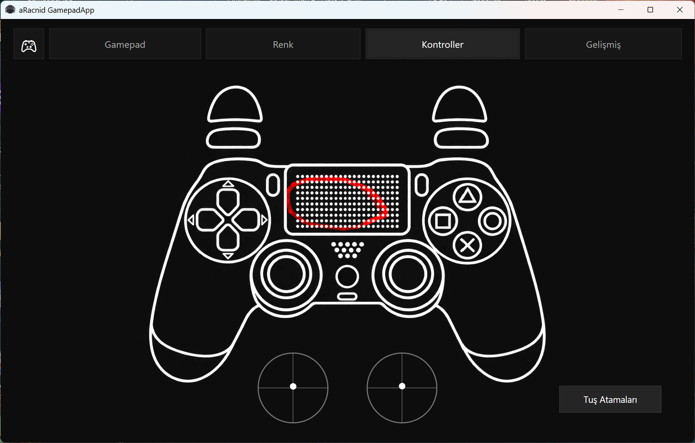
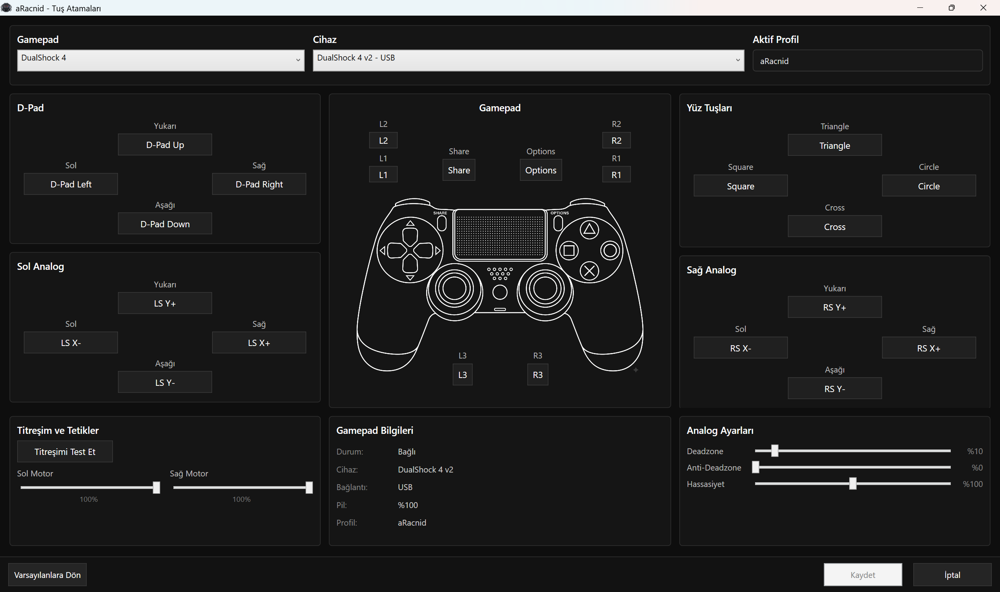
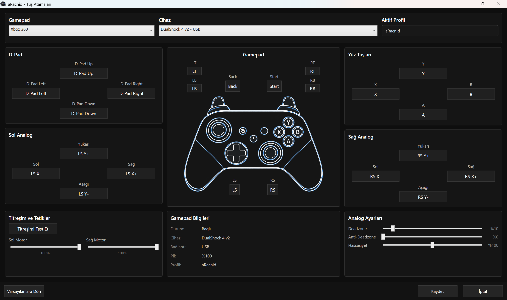
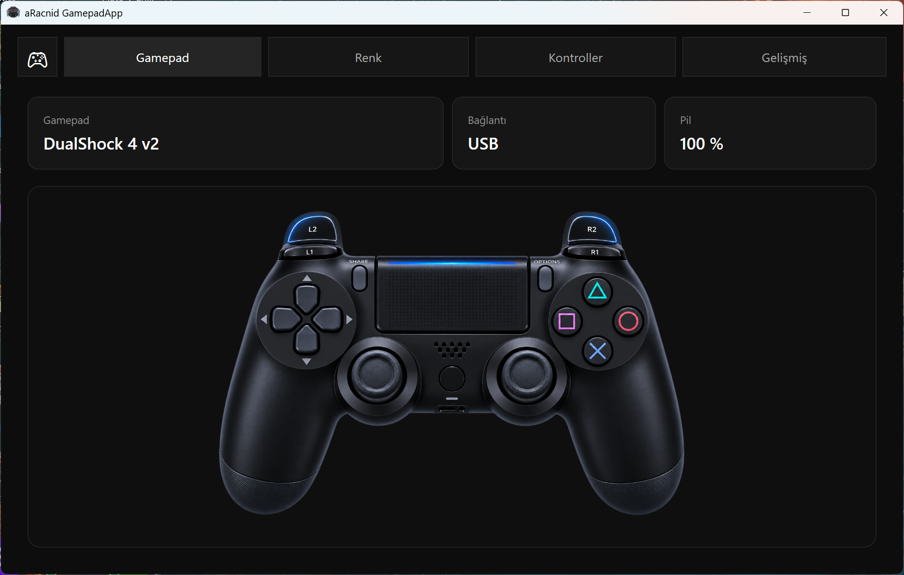
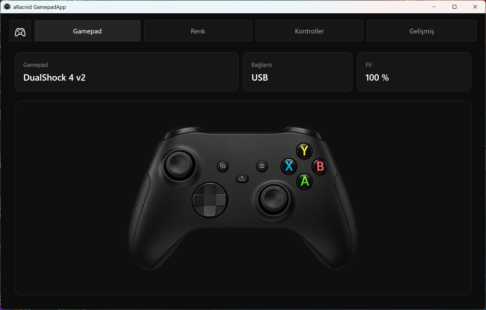
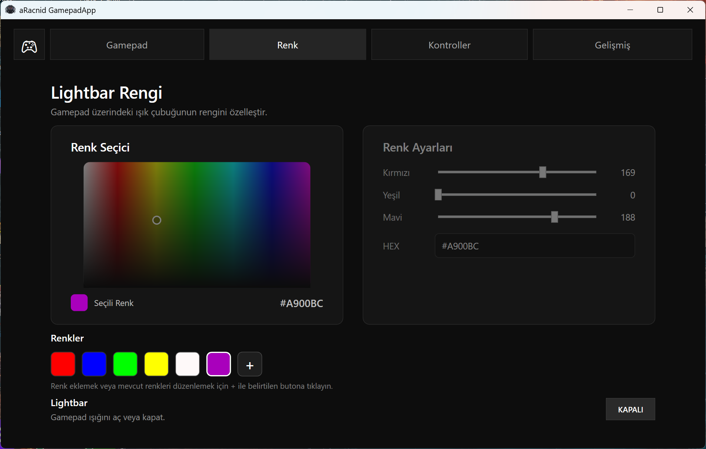
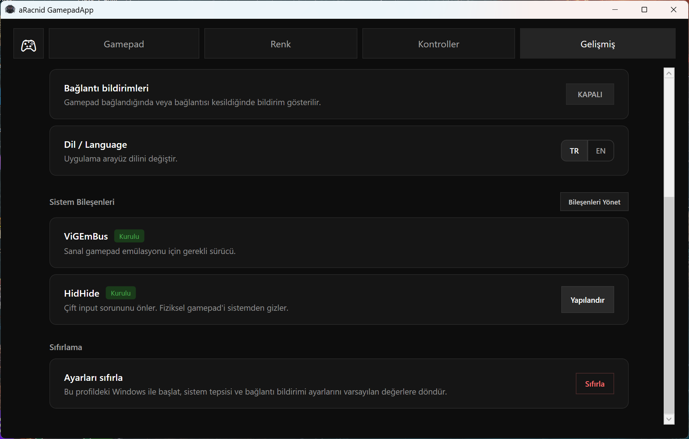

Recommended
Setup Installer
The easiest way to install aRacnid on your PC.
Windows 10 / 11 · x64 · 53 MB
Download Setup
Test, remap, customize and emulate supported controllers on Windows with aRacnid GamepadApp.
Setup is recommended for most users. Both packages are built for Windows 10 / 11 64-bit.
The easiest way to install aRacnid on your PC.
Extract the archive and run aRacnid without using the installer.
aRacnid and its installer are currently unsigned, so Windows SmartScreen may display a warning on first launch.
After your download starts, follow these steps to prepare virtual controller output.
Run the Setup installer, or extract the Portable ZIP.
Open the app and select or create your profile.
Open Advanced → Manage Components and install ViGEmBus and HidHide when needed.
Connect a supported controller by USB or Bluetooth and choose your virtual output.
Built around real-time testing, flexible remapping and clean virtual controller output.
See buttons, sticks, triggers and controller status react in real time. aRacnid can visualize both DualShock-style and Xbox-style layouts.

Map buttons, sticks and triggers to the output layout you want, then tune deadzone, anti-deadzone and sensitivity settings.


Use a supported physical controller and present it to games as a virtual DualShock 4 or Xbox 360 Controller.


Choose custom colors, save color presets and control the controller lightbar directly from aRacnid.

Manage the drivers used for virtual controller output from inside the app. HidHide also includes a Configure action for double-input prevention.

Connect supported controllers by USB or Bluetooth where the controller provides it.
DualShock 4 v1 · DualShock 4 v2 · DS4 USB Wireless Adapter · DualSense · DualSense Edge
Switch Pro Controller · Nintendo Joy-Con
F310 · F510 · F710
Quick answers to the things users are most likely to need before getting started.
Open a GitHub Issue for support, bug reports or feature requests.